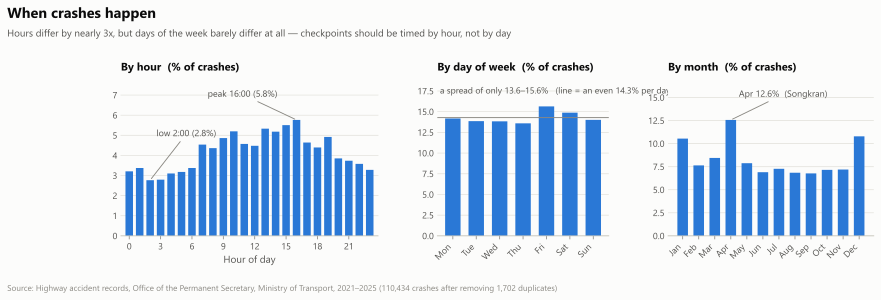
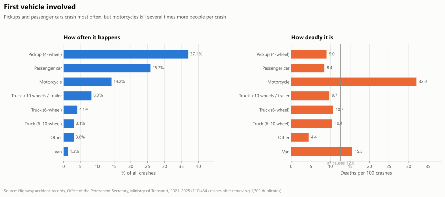
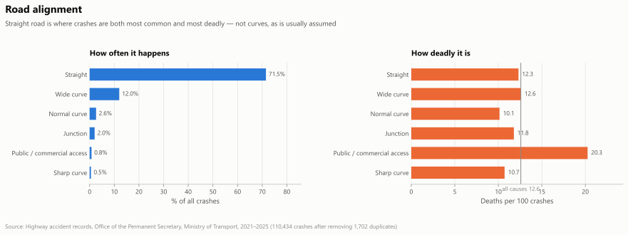
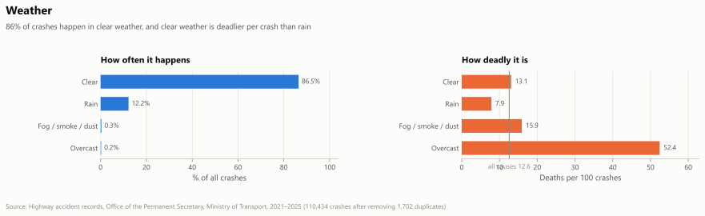

DADT-D-0012-26-Evening · Data Science & Visualization
Thai Highway Accidents
2021–2025
When and where should checkpoint labor be positioned to prevent alcohol-related road deaths?
Traffic Enforcement Resource Allocation Manager · Royal Thai Police / DDPM
Part 1 · The stakes
Thailand loses about 50 people a day on its roads
Why our own totals are smaller — and not in conflict
WHO counts every road in Thailand and adjusts for under-reporting. This project analyses the 110,434 highway crashes and 13,901 deaths recorded by the Ministry of Transport between 2021 and 2025 — a recorded subset of the national toll, not a contradiction of it.
Source: World Health Organization, Global status report on road safety 2023 — Thailand country profile, data year 2021. This is the only figure in the deck that does not come from Datasource/.
Part 1 · Data and method
What this dataset can answer, and what it cannot
The limitation, stated before anyone has to ask
This file covers about 17% of Thailand's road deaths — 2,780 deaths a year here against 17,447 nationally (Department of Disease Control three-database system, 2024). It records highways, rural highways and expressways only — not city streets or local roads, which is where most motorcyclists die.
Method: risk is measured against exposure — crashes per vehicle-kilometre, using traffic volume × section length × years — so a busy road is not automatically a dangerous one. Every conclusion that follows is about highways, not about Thailand as a whole: motorcycles are 36% of deaths in this file against roughly 81% nationally.
Part 1 · Descriptive
Alcohol is in the deadliest tier of crash causes
Speeding is 71% of crashes. Scroll to see the same 18 causes reordered by how often they kill instead of how often they happen.
Alcohol is 1.4% of recorded crashes but kills 22.0 per 100 — against 12.6 across all crashes and 11.7 for speeding. Three other causes sit statistically level with it, so the point is the magnitude, not the ranking.
Part 1 · Descriptive
Time of day decides deployment; day of week does not
Hours differ by 2.1× — 02:00 carries 2.8% of crashes and 16:00 carries 5.8% — while weekdays sit inside a 13.6–15.6% band, near an even 14.3% split. Alcohol is the exception this chart does not isolate: 53% of alcohol-related crashes fall on Friday–Sunday and 59% between 19:00 and 04:00.

Part 1 · Descriptive
Motorcycles crash less often and kill far more per crash

Pickups are 37% of crashes and kill 9.0 per 100. Motorcycles are 14% of crashes and kill 32.0 — 3.6× more per crash.
Road alignment and weather point the same way: straight road is 71.5% of crashes at 12.3 deaths per 100, no safer than a curve; and 86% of crashes happen in clear weather, which is deadlier per crash than rain — 13.1 against 7.9.

